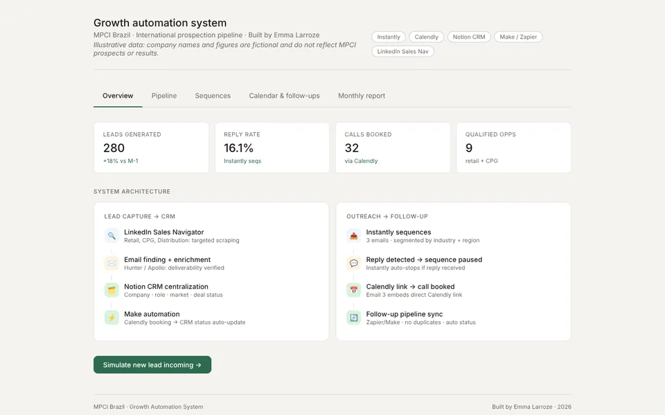
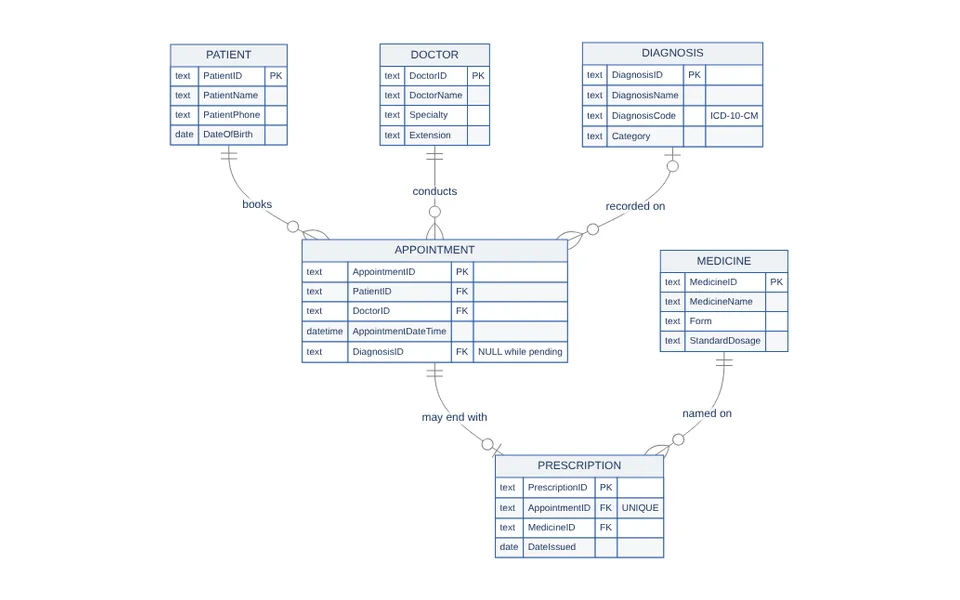
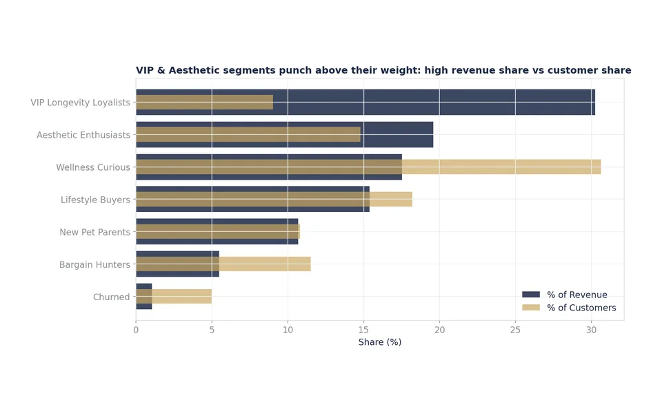
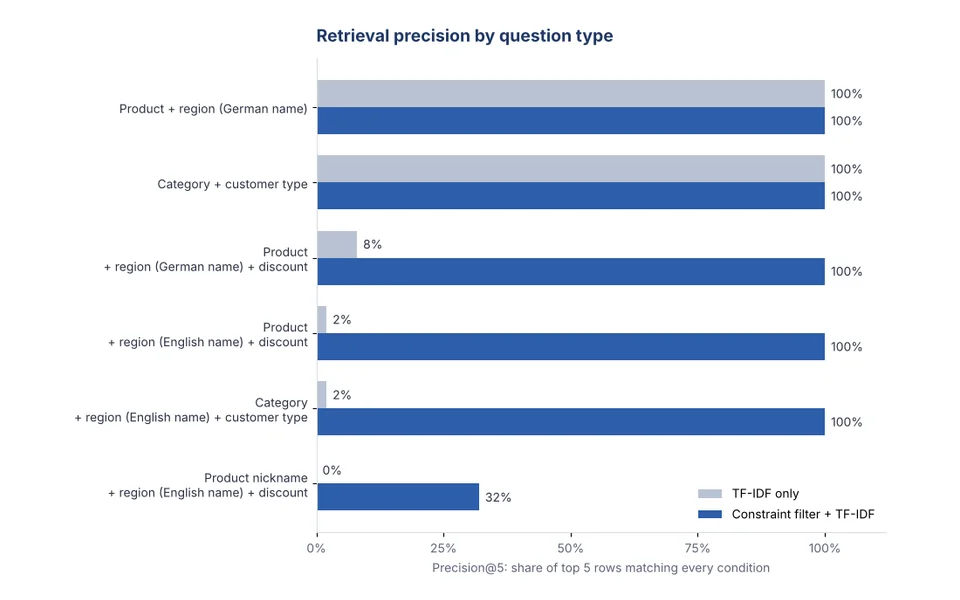
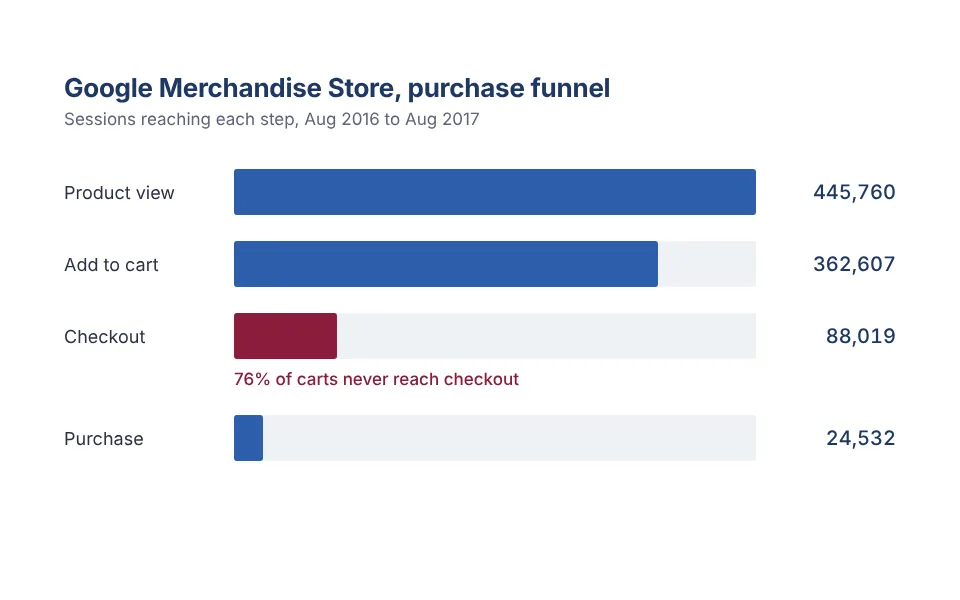
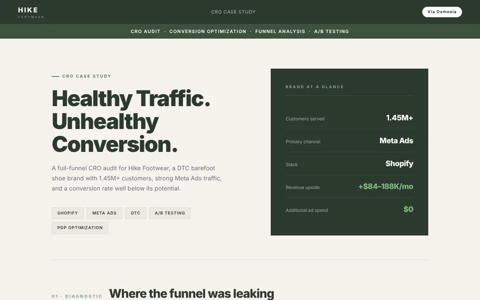
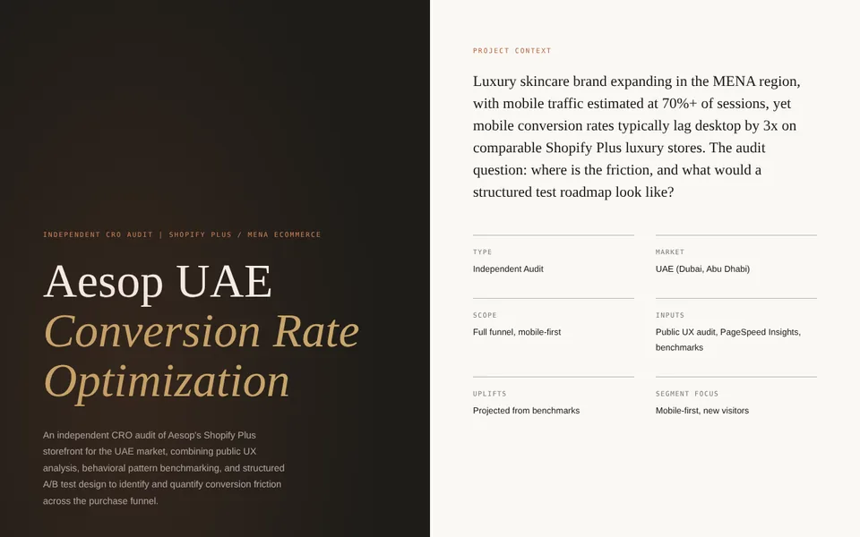

Selected work
-
How can one analyst run an international B2B pipeline from first contact to booked call to monthly report?
One automated flow from lead capture to booked call to monthly report, so replies pause outreach on their own and no follow-up is sent twice.
The system I designed and ran at MPCI Brazil: LinkedIn Sales Navigator sourcing, email enrichment, outreach sequences segmented by industry and region, Calendly bookings synced to a Notion CRM, and a monthly report with an AI-written summary.

-
How do you turn a clinic's messy records into a database that cannot contradict itself?
Three data anomalies, removed by design. Each patient's phone number now lives in one place, a visit can be cancelled without losing the patient, and 12 automated checks prove every business rule holds.
I translated the clinic's workflow into four business rules, modeled six entities, normalized the design to Third Normal Form, and built it in SQLite with constraints, sample data, and queries such as a pending-diagnosis worklist and doctor workload.

-
Where should a scaling business invest, and where should it cut?
9% of customers, 30% of revenue. The VIP segment carries the brand, and subscribers are worth 2.1 times as much as one-time buyers, so retention beats more top-of-funnel spend.
I built an 88,000-row, seven-table e-commerce dataset and worked it through cohort retention, lifetime value by segment, acquisition cost by channel, and unit economics, ending in a prioritized 12‑month plan.

-
Why did an AI search over sales data return the wrong rows, and how much better can it get?
From 35% to 89% precision. The data said Bayern while the question said Bavaria, and "10% discount" matched rows with a quantity of 10. Reading the question's conditions before ranking fixed both.
I rebuilt our team's retrieval-augmented generation (RAG) pipeline over a 30,000-row sales table, diagnosed the mismatch, added a constraint-aware retriever, and measured both versions on 60 labelled questions, including the cases the fix still misses.

-
Which channels and funnel steps actually drive revenue at the Google Merchandise Store?
76% of carts never reach checkout, the largest single leak in the funnel. Paid display (CPM) converts at 2.43% while affiliate traffic converts at 0.05%.
Four annotated BigQuery SQL queries on Google's public Analytics sample, each answering one business question: revenue baseline, channel attribution, conversion funnel, and product mix.

-
Why does strong traffic fail to turn into revenue, and what is the fix worth?
+$84K to +$188K a month, projected, with no extra ad spend. The problem was conversion architecture, not acquisition.
A full-funnel conversion audit for a barefoot shoe brand with 1.45 million customers: funnel diagnostic, buyer personas, five strategic levers, six quick wins, and an A/B test roadmap.

-
Where do a luxury brand's mobile customers drop off, and which tests should run first?
Four tests, ranked by ICE score. The roadmap starts with an always-visible mobile add-to-bag bar and a trust layer for shoppers arriving cold from paid social.
An audit of Aesop's UAE Shopify Plus storefront: a walkthrough of six funnel stages, a benchmark against Byredo, Diptyque, and Le Labo, and four fully specified A/B tests.
